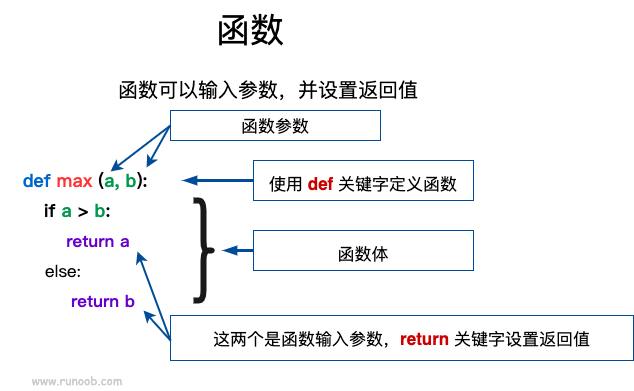

Python基础语法记录
前言：
以前也闲得无聊看过一点Python，但是吧，平常用不上，渐渐就生疏了，也没怎么继续学下去，现在基本忘光了。现在准备入手OpenCV，拿Python版入手，稳妥起见先把以前看的一点Python拾遗补漏，记点记录以后忘了的话还可以翻翻看看，毕竟现在手头语言也不少了(java，dart，c++，JS)，时间长了难免有搞混的情况。
(这里吐槽一句，软院本科真的是在培养全沾工程师，（我的c++还好，js完全就是沾了沾，java也没有完全特别深入地去学，dart自学的，算得上是用的比较熟练的脚本语言）)。
基于Python3！Python2已经逐渐成为过去式
正文
基本语法
-
标识符
- 第一个字符必须是字母表中字母或下划线 _ 。
- 标识符的其他的部分由字母、数字和下划线组成。
- 标识符对大小写敏感。
- 可以中文变量名但不要这么做
-
使用缩进来表示代码块
- 类似
yaml格式，缩进一般是4个空格
- 类似
-
多行语句
- 使用反斜杠 \来实现多行语句
- 在 [], {}, 或 () 中的多行语句，不需要使用反斜杠
-
同一行显示多条语句
- Python 可以在同一行中使用多条语句，语句之间使用分号 ; 分割
- 如
import sys; x = 'runoob'; sys.stdout.write(x + '\n')
-
多个语句构成代码组
-
缩进相同的一组语句构成一个代码块，我们称之代码组。
像if、while、def和class这样的复合语句，首行以关键字开始，以冒号( : )结束，该行之后的一行或多行代码构成代码组。
1
2
3
4
5
6if expression :
suite
elif expression :
suite
else :
suite
-
-
不用任和符号结尾（除非在同一行显示）
数据类型
注意：
变量声明
Python 中的变量不需要声明。每个变量在使用前都必须赋值，变量赋值以后该变量才会被创建。
在 Python 中，变量就是变量，它没有类型，我们所说的"类型"是变量所指的内存中对象的类型。
多变量赋值
允许同时为多个变量赋值，如：
1 | a = b = c = 1 |
组合数据类型
六个标准的数据类型：
- Number（数字）
- String（字符串）
- List（列表）
- Tuple（元组）
- Set（集合）
- Dictionary（字典）
其中：
- **不可变数据（3 个）：**Number（数字）、String（字符串）、Tuple（元组）；
- **可变数据（3 个）：**List（列表）、Dictionary（字典）、Set（集合）。
（Number与String不可变是因为Python不像Java那样存在数据类型的定义与调用，Python变量不需要声明，也就是说，如果你试图像java一样对变量重新赋值，编译器会认为你定义了一个重名变量）
可变性
对于可变对象，比如list，对list进行操作，list内部的内容是会变化的，比如：
1 | a = ['c', 'b', 'a'] |
而对于不可变对象，比如str，对str进行操作呢：
1 | a = 'abc' |
虽然字符串有个replace()方法，也确实变出了'Abc'，但变量a最后仍是'abc'，应该怎么理解呢？
我们先把代码改成下面这样：
1 | a = 'abc' |
要始终牢记的是，a是变量，而'abc'才是字符串对象！有些时候，我们经常说，对象a的内容是'abc'，但其实是指，a本身是一个变量，它指向的对象的内容才是'abc'：
1 | ┌───┐ ┌───────┐ |
当我们调用a.replace('a', 'A')时，实际上调用方法replace是作用在字符串对象'abc'上的，而这个方法虽然名字叫replace，但却没有改变字符串'abc'的内容。相反，replace方法创建了一个新字符串'Abc'并返回，如果我们用变量b指向该新字符串，就容易理解了，变量a仍指向原有的字符串'abc'，但变量b却指向新字符串'Abc'了：
1 | ┌───┐ ┌───────┐ |
所以，对于不变对象来说，调用对象自身的任意方法，也不会改变该对象自身的内容。相反，这些方法会创建新的对象并返回，这样，就保证了不可变对象本身永远是不可变的。
Number（数字）
Python3 支持 int、float、bool、complex（复数）。
在Python 3里，只有一种整数类型 int，表示为长整型，没有 python2 中的 Long。
数值运算注意点：
1 | 2 / 4 # 除法，得到一个浮点数 |
Python的整数没有大小限制，而某些语言的整数根据其存储长度是有大小限制的，例如Java对32位整数的范围限制在-2147483648-2147483647。
Python的浮点数也没有大小限制，但是超出一定范围就直接表示为inf（无限大）。
String（字符串）
Python中的字符串用单引号 ’ 或双引号 " 括起来，同时使用反斜杠 \ 转义特殊字符。
字符串的截取：

1 | str = 'Runoob' |
字符串复制：
使用 * ，比如：
1 | print (str * 2) # 输出字符串两次，也可以写成 print (2 * str) |
与 C 字符串不同的是，Python 字符串不能被改变。向一个索引位置赋值，比如word[0] = 'm’会导致错误。
List（列表）
-
列表中元素的类型可以不相同
-
列表同样可以被索引和截取，列表被截取后返回一个包含所需元素的新列表。
-
内置函数基本跟java一致

1 | list = [ 'abcd', 786 , 2.23, 'runoob', 70.2 ] |
另：
Python 列表截取可以接收第三个参数，参数作用是截取的步长，以下实例在索引 1 到索引 4 的位置并设置为步长为 2（间隔一个位置）来截取字符串：

如果第三个参数为负数表示逆向读取，以下实例用于翻转字符串：
1 | def reverseWords(input): |
1 | runoob like I |
Tuple（元组）
元组（tuple）与列表类似，不同之处在于元组的元素不能修改。
不可变的tuple有什么意义？因为tuple不可变，所以代码更安全。
元组写在小括号 () 里，不过小括号可以省略，元素之间用逗号隔开。但是打印元组时会将括号打印出来。
元组中的元素类型也可以不相同
1 | tuple = ( 'abcd', 786 , 2.23, 'runoob', 70.2 ) |
1 | ('abcd', 786, 2.23, 'runoob', 70.2) |
注意：
-
1、与字符串一样，元组的元素不能修改。
-
2、元组也可以被索引和切片，方法一样。
-
3、注意构造包含 0 或 1 个元素的元组的特殊语法规则。
1
2tup1 = () # 空元组
tup2 = (20,) # 一个元素，需要在元素后添加逗号 -
4、元组也可以使用+操作符进行拼接。
Set（集合）
无序，不可重复
可以使用大括号 { } 或者 set() 函数创建集合，注意：创建一个空集合必须用 set() 而不是 { }，因为 { } 是用来创建一个空字典。
1 | sites = {'Google', 'Taobao', 'Runoob', 'Facebook', 'Zhihu', 'Baidu'} |
1 | {'Zhihu', 'Baidu', 'Taobao', 'Runoob', 'Google', 'Facebook'} |
还有一些封装好的函数：
| 函数 | 描述 |
|---|---|
| S.add(x) | 若x不在集合中，则加入 |
| S.clear() | 清空集合 |
| S.copy() | 返回S的一个副本 |
| S.pop() | 随机返回S内的一个元素**（并将集合内该元素删除）** |
| S.discard(x) | 若x在S内，删除。不存在则不报错 |
| S.remove(x) | 若x在S内，删除。不存在则报错 |
| S.isdisjoint(T) | S与T两集合无相同元素则返回true |
| len(S) | |
| x in S | |
| x not in S |
Dictionary（字典）
相当于java的map
字典是一种映射类型，字典用 { } 标识，它是一个无序的 键(key) : 值(value) 的集合。
键(key)必须使用不可变类型。在同一个字典中，键(key)必须是唯一的。
1 | dicts = {} |
1 | 1 - 菜鸟教程 |
构造函数 dict() 可以直接从键值对序列中构建字典,如下：
1 | dict([('Runoob', 1), ('Google', 2), ('Taobao', 3)]) |
注意：
- 字典的关键字必须为不可变类型，且不能重复。
- 创建空字典使用 { }。
- 还有一些内置的函数，例如clear()、keys()、values()等。
和list比较，dict有以下几个特点：
- 查找和插入的速度极快，不会随着key的增加而变慢；
- 需要占用大量的内存，内存浪费多。
而list相反：
- 查找和插入的时间随着元素的增加而增加；
- 占用空间小，浪费内存很少。
所以，dict是用空间来换取时间的一种方法。
dict可以用在需要高速查找的很多地方，在Python代码中几乎无处不在，正确使用dict非常重要，需要牢记的第一条就是dict的key必须是不可变对象。
这是因为dict根据key来计算value的存储位置，如果每次计算相同的key得出的结果不同，那dict内部就完全混乱了。这个通过key计算位置的算法是哈希算法（Hash）。
要保证hash的正确性，作为key的对象就不能变。在Python中，字符串、整数等都是不可变的，因此，可以放心地作为key。而list是可变的，就不能作为key。
其他基本数据类型
布尔值
布尔值和布尔代数的表示完全一致，一个布尔值只有True、False两种值，要么是True，要么是False，在Python中，可以直接用True、False表示布尔值（请注意大小写），也可以通过布尔运算计算出来
布尔值可以用（与）and、（或）or和（非）not运算。
空值
空值是Python里一个特殊的值，用None表示。None不能理解为0，因为0是有意义的，而None是一个特殊的空值。
可以理解为java的null
数据类型转换
内置的转换函数
| 函数 | 描述 |
|---|---|
| int(x [,base]) | 将x转换为一个整数 |
| float(x) | 将x转换到一个浮点数 |
| complex(real [,imag]) | 创建一个复数 |
| str(x) | 将对象 x 转换为字符串 |
| repr(x) | 将对象 x 转换为表达式字符串 |
| eval(str) | 用来计算在字符串中的有效Python表达式,并返回一个对象 |
| tuple(s) | 将序列 s 转换为一个元组 |
| list(s) | 将序列 s 转换为一个列表 |
| set(s) | 转换为可变集合 |
| dict(d) | 创建一个字典。d 必须是一个 (key, value)元组序列。 |
| frozenset(s) | 转换为不可变集合 |
| chr(x) | 将一个整数转换为一个字符 |
| ord(x) | 将一个字符转换为它的整数值 |
| hex(x) | 将一个整数转换为一个十六进制字符串 |
| oct(x) | 将一个整数转换为一个八进制字符串 |
函数
定义一个函数
你可以定义一个由自己想要功能的函数，以下是简单的规则：
- 函数代码块以 def 关键词开头，后接函数标识符名称和圆括号 ()。
- 任何传入参数和自变量必须放在圆括号中间，圆括号之间可以用于定义参数。
- 函数的第一行语句可以选择性地使用文档字符串—用于存放函数说明。
- 函数内容以冒号 : 起始，并且缩进。
- return [表达式] 结束函数，选择性地返回一个值给调用方，不带表达式的 return 相当于返回 None。

函数参数
传递方式：
python 函数的参数传递：
- **不可变类型：**类似 C++ 的值传递，如整数、字符串、元组。如 fun(a)，传递的只是 a 的值，没有影响 a 对象本身。如果在 fun(a) 内部修改 a 的值，则是新生成一个 a 的对象。
- **可变类型：**类似 C++ 的引用传递，如 列表，字典。如 fun(la)，则是将 la 真正的传过去，修改后 fun 外部的 la 也会受影响
python 中一切都是对象，严格意义我们不能说值传递还是引用传递，我们应该说传不可变对象和传可变对象。
参数类型：
除必须参数（就是正常写在参数列表里的参数）外，还有其他参数类型
关键字参数
关键字参数和函数调用关系紧密，函数调用使用关键字参数来确定传入的参数值。
使用关键字参数允许函数调用时参数的顺序与声明时不一致，因为 Python 解释器能够用参数名匹配参数值。
以下实例在函数 printme() 调用时使用参数名：
1 | def printme( str ): |
默认参数
调用函数时，如果没有传递参数，则会使用默认参数。以下实例中如果没有传入 age 参数，则使用默认值：
定义默认参数要牢记一点：默认参数必须指向不变对象！
1 | def printinfo( name, age = 35 ): |
1 | 名字: runoob |
不定长参数
你可能需要一个函数能处理比当初声明时更多的参数。这些参数叫做不定长参数，在参数列表中写的时候要在变量前加上*，并且只能放在参数列表的最后。
加了星号*的参数会以元组(tuple)的形式导入，存放所有未命名的变量参数。
1 | def printinfo( arg1, *vartuple ): |
1 | 输出: |
还有一种就是参数带两个星号 **，加了两个星号 **的参数会以字典的形式导入。
1 | def printinfo( arg1, **vardict ): |
1 | 输出: |
空函数与占位符
如果想定义一个什么事也不做的空函数，可以用pass语句：
1 | def nop(): |
pass语句什么都不做，那有什么用？实际上pass可以用来作为占位符，比如现在还没想好怎么写函数的代码，就可以先放一个pass，让代码能运行起来。
pass还可以用在其他语句里，比如：
1 | if age >= 18: |
返回多个值
函数可以返回多个值吗？答案是肯定的。
比如在游戏中经常需要从一个点移动到另一个点，给出坐标、位移和角度，就可以计算出新的坐标：
1 | import math |
import math语句表示导入math包，并允许后续代码引用math包里的sin、cos等函数。
然后，我们就可以同时获得返回值：
1 | x, y = move(100, 100, 60, math.pi / 6) |
但其实这只是一种假象，Python函数返回的仍然是单一值：
1 | r = move(100, 100, 60, math.pi / 6) |
原来返回值是一个tuple！但是，在语法上，返回一个tuple可以省略括号，而多个变量可以同时接收一个tuple，按位置赋给对应的值，所以，Python的函数返回多值其实就是返回一个tuple，但写起来更方便。
迭代器、列表生成式与生成器
迭代器
迭代是Python最强大的功能之一，是访问集合元素的一种方式。
迭代器是一个可以记住遍历的位置的对象。
迭代器对象从集合的第一个元素开始访问，直到所有的元素被访问完结束。迭代器只能往前不会后退。
迭代器有两个基本的方法：iter() 和 next()。
字符串，字典，列表或元组对象都可用于创建迭代器，只要是可迭代对象，无论有无下标，都可以迭代
for循环迭代
比如dict就可以迭代：
1 | d = {'a': 1, 'b': 2, 'c': 3} |
因为dict的存储不是按照list的方式顺序排列，所以，迭代出的结果顺序很可能不一样。
默认情况下，dict迭代的是key。如果要迭代value，可以用for value in d.values()，如果要同时迭代key和value，可以用for k, v in d.items()。
由于字符串也是可迭代对象，因此，也可以作用于for循环：
1 | for ch in 'ABC': |
所以，当我们使用for循环时，只要作用于一个可迭代对象，for循环就可以正常运行，而我们不太关心该对象究竟是list还是其他数据类型。
那么，如何判断一个对象是可迭代对象呢？方法是通过collections.abc模块的Iterable类型判断：
1 | from collections.abc import Iterable |
最后一个小问题，如果要对list实现类似Java那样的下标循环怎么办？Python内置的enumerate函数可以把一个list变成索引-元素对，这样就可以在for循环中同时迭代索引和元素本身：
1 | for i, value in enumerate(['A', 'B', 'C']): |
上面的for循环里，同时引用了两个变量，在Python里是很常见的，比如下面的代码：
1 | for x, y in [(1, 1), (2, 4), (3, 9)]: |
迭代器迭代
迭代器对象可以使用常规for语句进行遍历：
1 | list=[1,2,3,4] |
执行以上程序，输出结果如下：
1 | 1 2 3 4 |
也可以使用 next() 函数：
1 | list=[1,2,3,4] |
执行以上程序，输出结果如下：
1 | 1 |
创建一个迭代器
把一个类作为一个迭代器使用需要在类中实现两个方法 __iter__() 与__next__()。
如果你已经了解的面向对象编程，就知道类都有一个构造函数，Python 的构造函数为 __init__(), 它会在对象初始化的时候执行。__iter__() 方法返回一个特殊的迭代器对象， 这个迭代器对象实现了 __next__() 方法并通过 StopIteration 异常标识迭代的完成。__next__() 方法会返回下一个迭代器对象。
创建一个返回数字的迭代器，初始值为 1，逐步递增 1：
1 | class MyNumbers: |
执行输出结果为：
1 | 1 |
StopIteration
StopIteration 异常用于标识迭代的完成，防止出现无限循环的情况，在__next__()方法中我们可以设置在完成指定循环次数后触发 StopIteration 异常来结束迭代。
在 20 次迭代后停止执行：
1 | class MyNumbers: |
执行输出结果为：
1 | 1 |
列表生成式
列表生成式即List Comprehensions，是Python内置的非常简单却强大的可以用来创建list的生成式。
举个例子，要生成list [1, 2, 3, 4, 5, 6, 7, 8, 9, 10]可以用list(range(1, 11))：
1 | >>> list(range(1, 11)) |
但如果要生成[1x1, 2x2, 3x3, ..., 10x10]怎么做？方法一是循环：
1 | L = [] |
但是循环太繁琐，而列表生成式则可以用一行语句代替循环生成上面的list：
1 | [x * x for x in range(1, 11)] |
写列表生成式时，把要生成的元素x * x放到前面，后面跟for循环，就可以把list创建出来，十分有用，多写几次，很快就可以熟悉这种语法。
for循环后面还可以加上if判断，这样我们就可以筛选出仅偶数的平方：
1 | [x * x for x in range(1, 11) if x % 2 == 0] |
还可以使用两层循环，可以生成全排列：
1 | [m + n for m in 'ABC' for n in 'XYZ'] |
三层和三层以上的循环就很少用到了。
运用列表生成式，可以写出非常简洁的代码。例如，列出当前目录下的所有文件和目录名，可以通过一行代码实现：
1 | import os # 导入os模块，模块的概念后面讲到 |
for循环其实可以同时使用两个甚至多个变量，比如dict的items()可以同时迭代key和value：
1 | d = {'x': 'A', 'y': 'B', 'z': 'C' } |
因此，列表生成式也可以使用两个变量来生成list：
1 | d = {'x': 'A', 'y': 'B', 'z': 'C' } |
最后把一个list中所有的字符串变成小写：
1 | L = ['Hello', 'World', 'IBM', 'Apple'] |
if … else
使用列表生成式的时候，有些童鞋经常搞不清楚if...else的用法。
例如，以下代码正常输出偶数：
1 | [x for x in range(1, 11) if x % 2 == 0] |
但是，我们不能在最后的if加上else：
1 | [x for x in range(1, 11) if x % 2 == 0 else 0] |
这是因为跟在for后面的if是一个筛选条件，不能带else，否则如何筛选？
另一些童鞋发现把if写在for前面必须加else，否则报错：
1 | [x if x % 2 == 0 for x in range(1, 11)] |
这是因为for前面的部分是一个表达式，它必须根据x计算出一个结果。因此，考察表达式：x if x % 2 == 0，它无法根据x计算出结果，因为缺少else，必须加上else：
1 | [x if x % 2 == 0 else -x for x in range(1, 11)] |
上述for前面的表达式x if x % 2 == 0 else -x才能根据x计算出确定的结果。
可见，在一个列表生成式中，for前面的if ... else是表达式，而for后面的if是过滤条件，不能带else。
生成器
通过列表生成式，我们可以直接创建一个列表。但是，受到内存限制，列表容量肯定是有限的。而且，创建一个包含100万个元素的列表，不仅占用很大的存储空间，如果我们仅仅需要访问前面几个元素，那后面绝大多数元素占用的空间都白白浪费了。
所以，如果列表元素可以按照某种算法推算出来，那我们是否可以在循环的过程中不断推算出后续的元素呢？这样就不必创建完整的list，从而节省大量的空间。在Python中，这种一边循环一边计算的机制，称为生成器：generator。
要创建一个generator，有很多种方法。第一种方法很简单，只要把一个列表生成式的[]改成()，就创建了一个generator：
1 | L = [x * x for x in range(10)] |
创建L和g的区别仅在于最外层的[]和()，L是一个list，而g是一个generator。
我们可以直接打印出list的每一个元素，但我们怎么打印出generator的每一个元素呢？
如果要一个一个打印出来，可以通过next()函数获得generator的下一个返回值：
1 | >>> next(g) |
我们讲过，generator保存的是算法，每次调用next(g)，就计算出g的下一个元素的值，直到计算到最后一个元素，没有更多的元素时，抛出StopIteration的错误。
当然，上面这种不断调用next(g)实在是太变态了，正确的方法是使用for循环，因为generator也是可迭代对象：
1 | >>> g = (x * x for x in range(10)) |
所以，我们创建了一个generator后，基本上永远不会调用next()，而是通过for循环来迭代它，并且不需要关心StopIteration的错误。
generator非常强大。如果推算的算法比较复杂，用类似列表生成式的for循环无法实现的时候，还可以用函数来实现。
比如，著名的斐波拉契数列（Fibonacci），除第一个和第二个数外，任意一个数都可由前两个数相加得到：
1, 1, 2, 3, 5, 8, 13, 21, 34, …
斐波拉契数列用列表生成式写不出来，但是，用函数把它打印出来却很容易：
1 | def fib(max): |
注意，赋值语句：
1 | a, b = b, a + b |
相当于：
1 | t = (b, a + b) # t是一个tuple |
但不必显式写出临时变量t就可以赋值。
上面的函数可以输出斐波那契数列的前N个数：
1 | >>> fib(6) |
仔细观察，可以看出，fib函数实际上是定义了斐波拉契数列的推算规则，可以从第一个元素开始，推算出后续任意的元素，这种逻辑其实非常类似generator。
也就是说，上面的函数和generator仅一步之遥。要把fib函数变成generator函数，只需要把print(b)改为yield b就可以了：
1 | def fib(max): |
这就是定义generator的另一种方法。如果一个函数定义中包含yield关键字，那么这个函数就不再是一个普通函数，而是一个generator函数，调用一个generator函数将返回一个generator：
1 | >>> f = fib(6) |
这里，最难理解的就是generator函数和普通函数的执行流程不一样。普通函数是顺序执行，遇到return语句或者最后一行函数语句就返回。而变成generator的函数，在每次调用next()的时候执行，遇到yield语句返回，再次执行时从上次返回的yield语句处继续执行。
举个简单的例子，定义一个generator函数，依次返回数字1，3，5：
1 | def odd(): |
调用该generator函数时，首先要生成一个generator对象，然后用next()函数不断获得下一个返回值：
1 | >>> o = odd() |
可以看到，odd不是普通函数，而是generator函数，在执行过程中，遇到yield就中断，下次又继续执行。执行3次yield后，已经没有yield可以执行了，所以，第4次调用next(o)就报错。
请务必注意：调用generator函数会创建一个generator对象，多次调用generator函数会创建多个相互独立的generator。
有的童鞋会发现这样调用next()每次都返回1：
1 | >>> next(odd()) |
原因在于odd()会创建一个新的generator对象，上述代码实际上创建了3个完全独立的generator，对3个generator分别调用next()当然每个都会返回第一个值。
正确的写法是创建一个generator对象，然后不断对这一个generator对象调用next()：
1 | >>> g = odd() |
回到fib的例子，我们在循环过程中不断调用yield，就会不断中断。当然要给循环设置一个条件来退出循环，不然就会产生一个无限数列出来。
同样的，把函数改成generator函数后，我们基本上从来不会用next()来获取下一个返回值，而是直接使用for循环来迭代：
1 | >>> for n in fib(6): |
但是用for循环调用generator时，发现拿不到generator的return语句的返回值。如果想要拿到返回值，必须捕获StopIteration错误，返回值包含在StopIteration的value中：
1 | >>> g = fib(6) |
关于如何捕获错误，后面的错误处理还会详细讲解。
PS.
我们已经知道，可以直接作用于for循环的数据类型有以下几种：
-
一类是集合数据类型，如
list、tuple、dict、set、str等； -
一类是
generator，包括生成器和带yield的generator function。
这些可以直接作用于for循环的对象统称为可迭代对象：Iterable。
可以使用isinstance()判断一个对象是否是Iterable对象：
1 | >>> from collections.abc import Iterable |
而生成器不但可以作用于for循环，还可以被next()函数不断调用并返回下一个值，直到最后抛出StopIteration错误表示无法继续返回下一个值了。
可以被next()函数调用并不断返回下一个值的对象称为迭代器：Iterator。
可以使用isinstance()判断一个对象是否是Iterator对象：
1 | >>> from collections.abc import Iterator |
生成器都是Iterator对象，但list、dict、str虽然是Iterable，却不是Iterator。
把list、dict、str等Iterable变成Iterator可以使用iter()函数：
1 | >>> isinstance(iter([]), Iterator) |
你可能会问，为什么list、dict、str等数据类型不是Iterator？
这是因为Python的Iterator对象表示的是一个数据流，Iterator对象可以被next()函数调用并不断返回下一个数据，直到没有数据时抛出StopIteration错误。可以把这个数据流看做是一个有序序列，但我们却不能提前知道序列的长度，只能不断通过next()函数实现按需计算下一个数据，所以Iterator的计算是惰性的，只有在需要返回下一个数据时它才会计算。
Iterator甚至可以表示一个无限大的数据流，例如全体自然数。而使用list是永远不可能存储全体自然数的。
小结
凡是可作用于for循环的对象都是Iterable类型；
凡是可作用于next()函数的对象都是Iterator类型，它们表示一个惰性计算的序列；
集合数据类型如list、dict、str等是Iterable但不是Iterator，不过可以通过iter()函数获得一个Iterator对象。
Python的for循环本质上就是通过不断调用next()函数实现的，例如：
1 | for x in [1, 2, 3, 4, 5]: |
实际上完全等价于：
1 | # 首先获得Iterator对象: |
函数式编程
高阶函数
高阶函数英文叫Higher-order function。什么是高阶函数？我们以实际代码为例子，一步一步深入概念。
变量可以指向函数
以Python内置的求绝对值的函数abs()为例，调用该函数用以下代码：
1 | abs(-10) |
但是，如果只写abs呢？
1 | abs |
可见，abs(-10)是函数调用，而abs是函数本身。
要获得函数调用结果，我们可以把结果赋值给变量：
1 | x = abs(-10) |
但是，如果把函数本身赋值给变量呢？
1 | f = abs |
结论：函数本身也可以赋值给变量，即：变量可以指向函数。
如果一个变量指向了一个函数，那么，可否通过该变量来调用这个函数？用代码验证一下：
1 | f = abs |
成功！说明变量f现在已经指向了abs函数本身。直接调用abs()函数和调用变量f()完全相同。
函数名也是变量
那么函数名是什么呢？函数名其实就是指向函数的变量！对于abs()这个函数，完全可以把函数名abs看成变量，它指向一个可以计算绝对值的函数！（或者可以理解为一个指针，指向该函数在内存中的位置）
如果把abs指向其他对象，会有什么情况发生？
1 | abs = 10 |
把abs指向10后，就无法通过abs(-10)调用该函数了！因为abs这个变量已经不指向求绝对值函数而是指向一个整数10！
当然实际代码绝对不能这么写，这里是为了说明函数名也是变量。要恢复abs函数，请重启Python交互环境。
注：由于abs函数实际上是定义在import builtins模块中的，所以要让修改abs变量的指向在其它模块也生效，要用import builtins; builtins.abs = 10。
传入函数
既然变量可以指向函数，函数的参数能接收变量，那么一个函数就可以接收另一个函数作为参数，这种函数就称之为高阶函数。
一个最简单的高阶函数：
1 | def add(x, y, f): |
当我们调用add(-5, 6, abs)时，参数x，y和f分别接收-5，6和abs，根据函数定义，我们可以推导计算过程为：
1 | x = -5 |
编写高阶函数，就是让函数的参数能够接收别的函数。
小结
把函数作为参数传入，这样的函数称为高阶函数，函数式编程就是指这种高度抽象的编程范式。